Transport urgent
Un imprévu, une pièce essentielle, un besoin immédiat. Contactez-nous 24/7 pour vérifier la disponibilité et organiser votre transport.
Appeler maintenant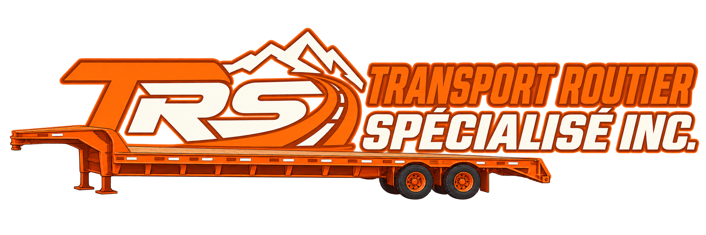
450 374-4737Transport industriel sur plateau pour les entreprises, les fournisseurs d’acier et les entrepreneurs. Pièces, matériaux et équipements : depuis Montréal, nous livrons aux chantiers, aux installations industrielles et en régions éloignées, partout au Québec.
Transports urgents selon disponibilité · Endroits restreints et difficiles d’accès, après évaluation.
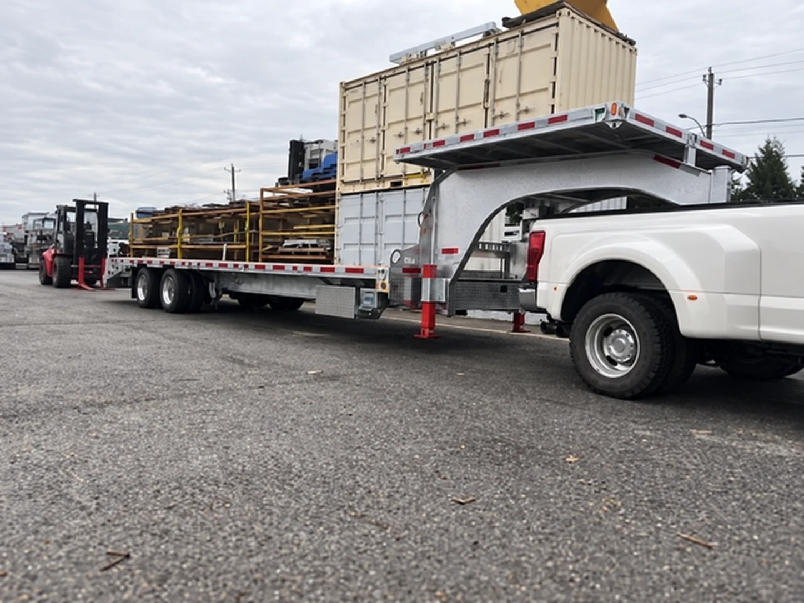
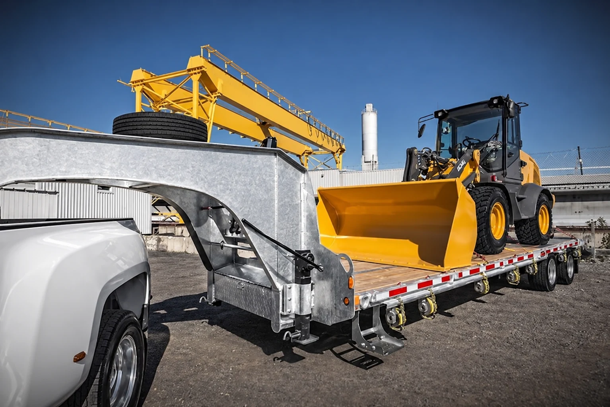
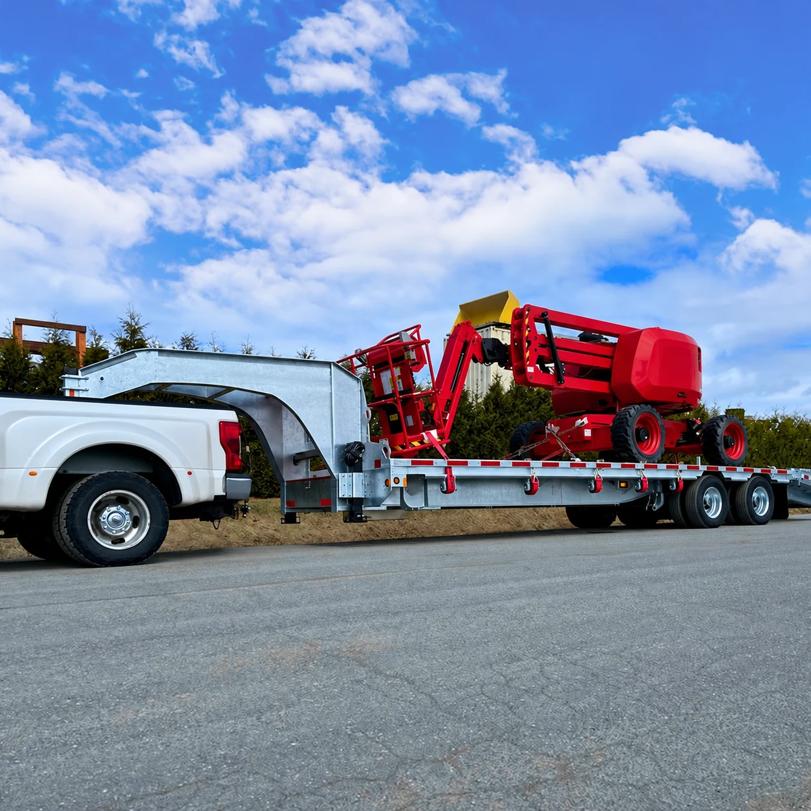
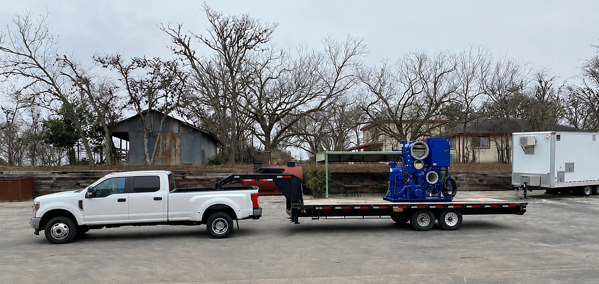
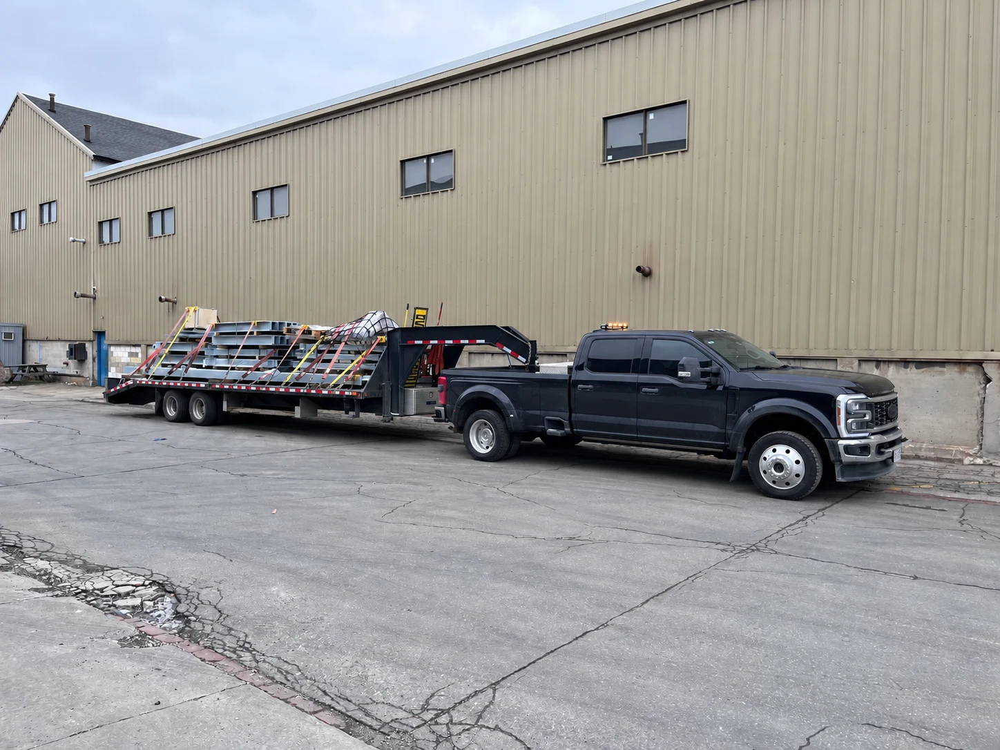
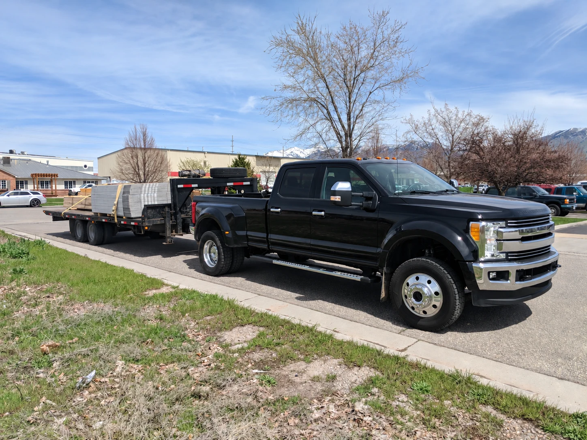
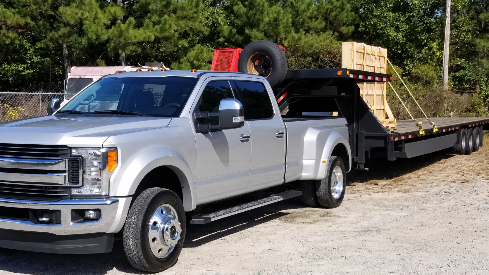
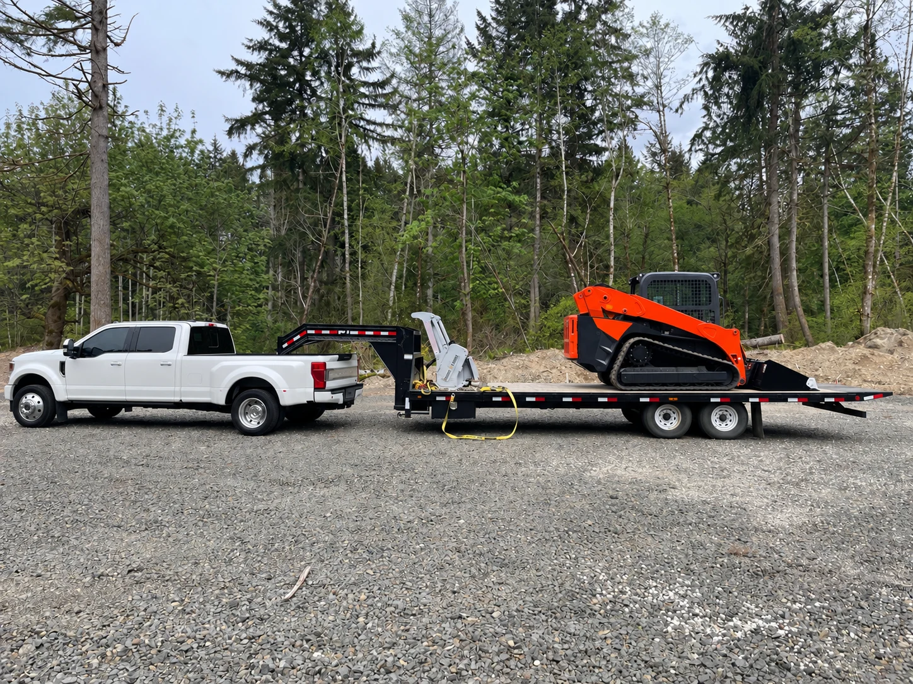
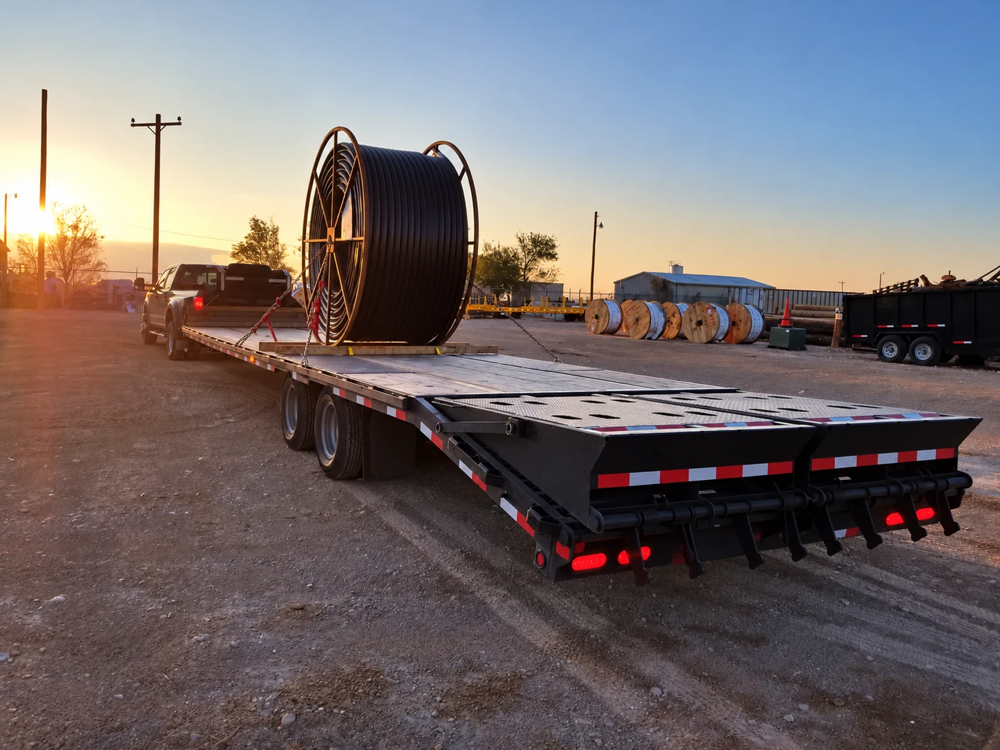
Exemples de transport présentés à titre d’illustration.
Transport sur remorque plateforme au Québec pour vos livraisons industrielles, vos transports urgents et votre approvisionnement régulier. Au départ de Montréal, nous desservons les régions éloignées et évaluons avec vous les conditions d’accès à votre destination.
Un imprévu, une pièce essentielle, un besoin immédiat. Contactez-nous 24/7 pour vérifier la disponibilité et organiser votre transport.
Appeler maintenantConstruisons une entente adaptée à vos trajets, à votre fréquence et aux besoins d’approvisionnement de votre entreprise.
Discuter d’une ententeNous livrons dans les endroits restreints et difficiles d’accès. La faisabilité est confirmée selon le gabarit de notre ensemble, votre chargement et les conditions sur place.
Présenter votre besoinPièce essentielle, matériel attendu sur un chantier ou équipement à acheminer : contactez-nous 24/7 pour évaluer votre transport urgent sur plateau, partout au Québec, y compris dans les régions très éloignées.
Les livraisons dans les endroits restreints et difficiles d’accès sont évaluées selon le chargement, le gabarit de notre ensemble et les conditions sur place. Chaque départ est confirmé selon la disponibilité et la faisabilité du mandat.
Appeler pour un transport urgent 450 374-4737Pour une urgence, privilégiez l’appel : discutons directement de votre besoin.
Des mandats commerciaux adaptés à votre matériel et à votre destination. Photos d’illustration des secteurs d’activité ciblés.
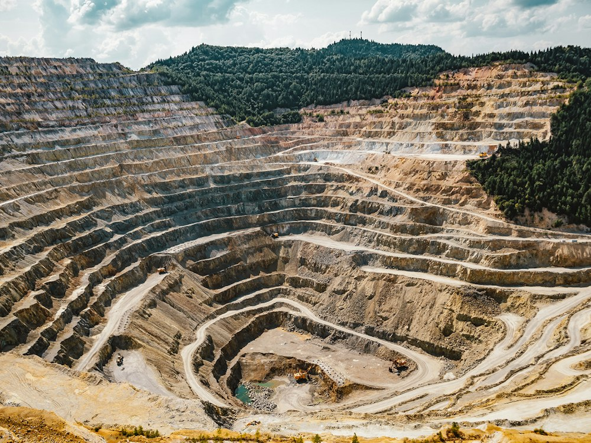
Pièces, outillage et matériel pour les sites éloignés. Nous ciblons notamment les besoins des entreprises minières et de leurs fournisseurs en Abitibi-Témiscamingue. Exigences et accès au site à confirmer pour chaque mandat.
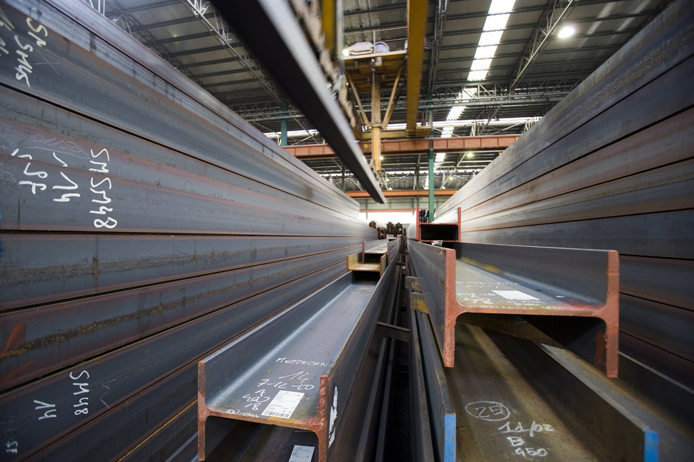
Fournisseurs d’acier, ateliers et entreprises industrielles : transport sur plateau de pièces et de produits d’acier, selon le poids, les dimensions et les exigences de manutention.
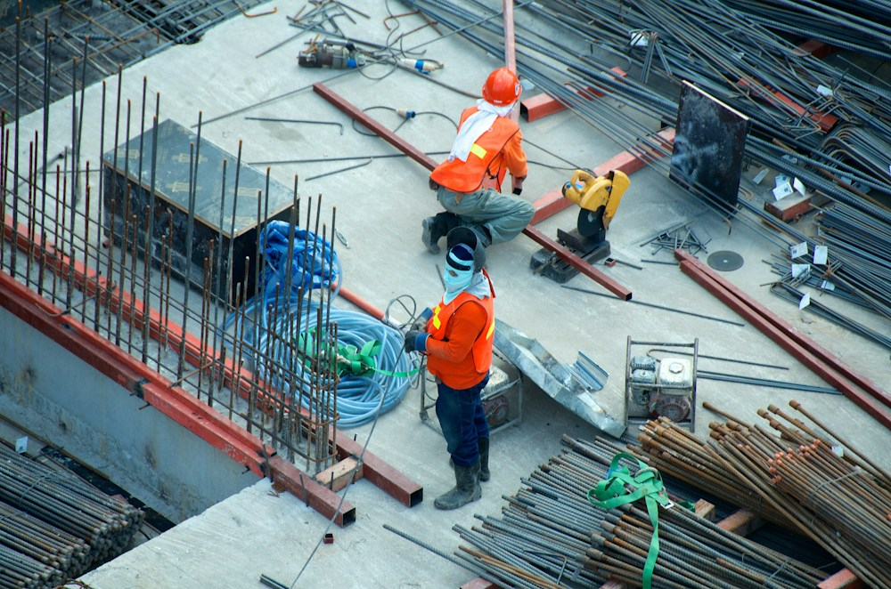
Entrepreneurs et équipes de chantier : livraison de matériaux, d’outillage et d’équipements selon votre calendrier. Accès restreints ou difficiles évalués avant de confirmer le transport.
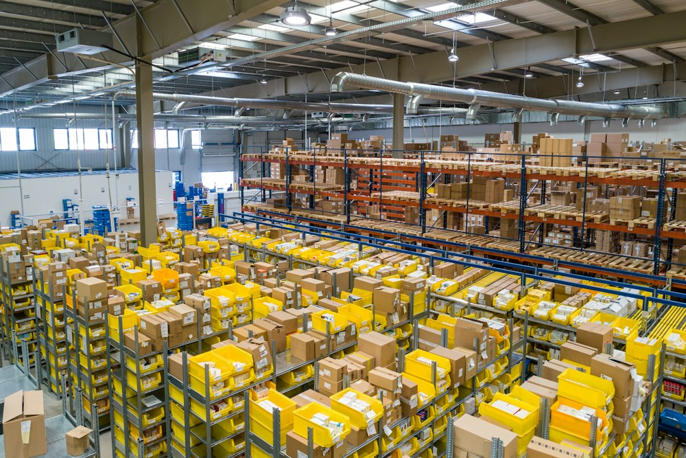
Un partenaire pour vos livraisons à vos clients, vos besoins ponctuels et vos trajets récurrents.
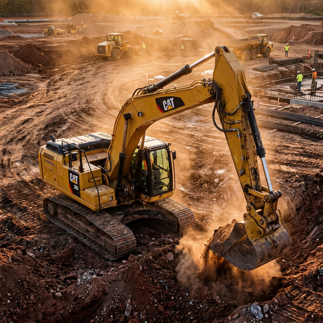
Concessionnaires, entreprises de location, distributeurs et ateliers de réparation : livraison d’équipements, de machines et de pièces entre vos établissements, vos clients et leurs chantiers. Transports ponctuels ou ententes récurrentes, selon le poids, les dimensions et la capacité réelle de notre ensemble.
Discuter de vos besoins réguliers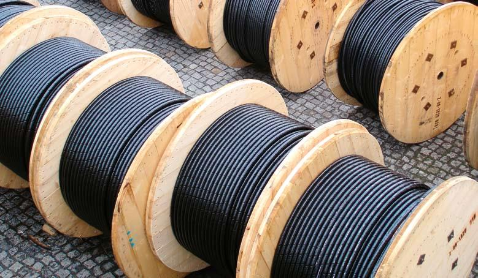
Entrepreneurs en réseaux électriques, installateurs de télécommunications et équipes d’entretien : livraison de pièces, de câbles, d’outillage et d’équipements vers vos chantiers et installations éloignées. Mandats planifiés, récurrents ou urgents, selon le chargement et les conditions d’accès.
Discuter de vos besoinsVotre marchandise est assurée pendant le transport. Notre équipe qualifiée prend soin de votre chargement avec rigueur et attention, pour une manutention soignée et un transport sécuritaire.
Vous pouvez suivre votre transport en temps réel pour connaître sa progression vers votre destination et coordonner la réception avec votre équipe.
Décrivez le chargement, son poids, ses dimensions et les moyens de manutention disponibles pour évaluer le transport.
Indiquez votre bon de commande, votre référence de chantier, le contact à la réception, l’horaire et les consignes d’accès.
Disponibilité, faisabilité, délai et conditions sont convenus avant le départ. Pour un transport urgent, appelez directement.
Depuis notre base à Montréal, nous desservons les régions très éloignées, les sites difficiles d’accès et l’ensemble du Québec. Les conditions d’accès et les moyens de manutention sont évalués avec vous avant de confirmer le transport. Abitibi-Témiscamingue, Côte-Nord, Nord-du-Québec, Saguenay–Lac-Saint-Jean et ailleurs au Québec : présentez-nous votre destination pour évaluer le trajet et l’accès au site.
Parlons de votre trajetLa faisabilité et les conditions de chaque transport sont confirmées après évaluation du poids, des dimensions et du chargement.
Un besoin régulier ? Discutons d’une entente adaptée à vos opérations.
450 374-4737 info@TRspecialise.com